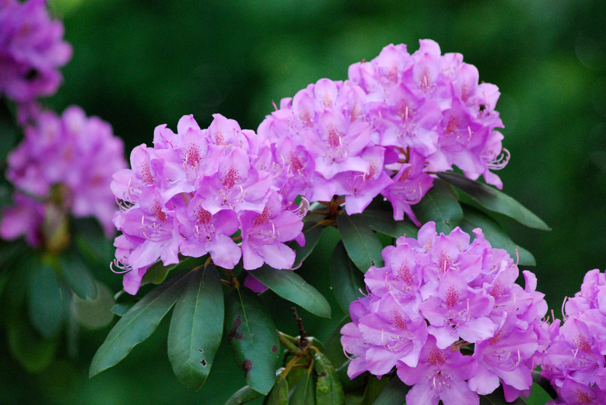
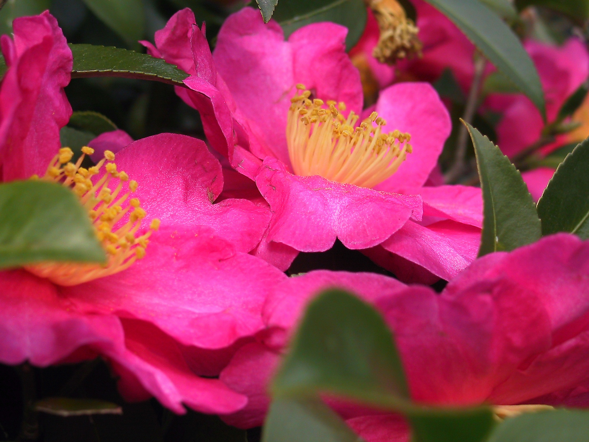
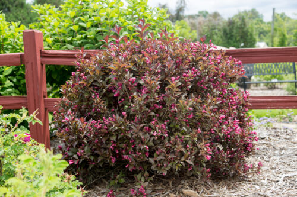

Azalea
Azaleas are wonderful additions to the garden. They are easy to
grow, look sensational, and have attractive foliage. Evergreen
azaleas provide year-round interest while deciduous azaleas often
have exquisite fall color and exhibit an elegant woody framework in
winter. Azaleas do well in full sun or part shade (about four hours
of sun). Planted in full sun, azaleas will be more compact and
floriferous. When planted in part shade, they will stretch toward
the sunlight and form a more graceful habit; flowers will not be as
plentiful but will last longer.

Camelia
The camellia is a flowering evergreen shrub with dark, glossy leaves
and large, lush blossoms that appear and bloom for several weeks
during the fall through early spring period in warmer regions. Where
it is reliably hardy (zones 7 to 9), the camellia is a very popular
plant that is used in much the same way that northern gardeners use
peonies. Similarities between peonies and camellias include lushly
petaled blooms and a tendency to outlive their owners Camellias can
be planted from container-grown nursery plants at almost anytime of
year except during the hottest summer months. They are slow-growing
but exceptionally long-lived plants.

Weigela
Weigela (pronounced why-GEE-luh) is one of those spring flowering
shrubs. In spring, this beauty bursts into bloom with pretty,
tubular-shaped flowers in shades of pink. Hummingbirds can't resist
the blossoms, so plant weigela if you want to attract these lovely
pollinators to your garden. Best of all, weigela is bulletproof —
easy to grow and pretty tough.